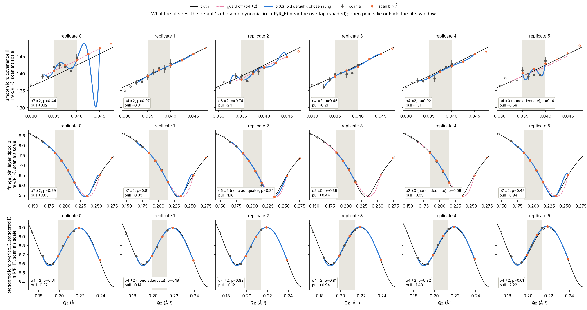
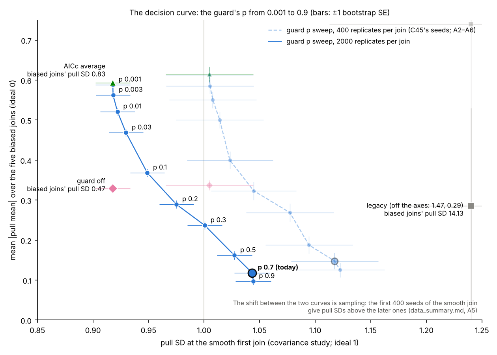
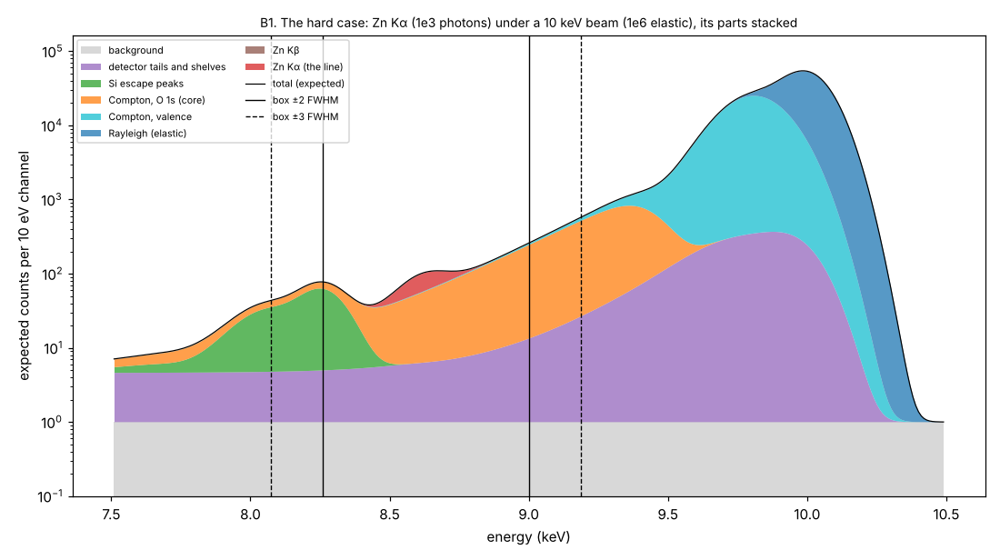
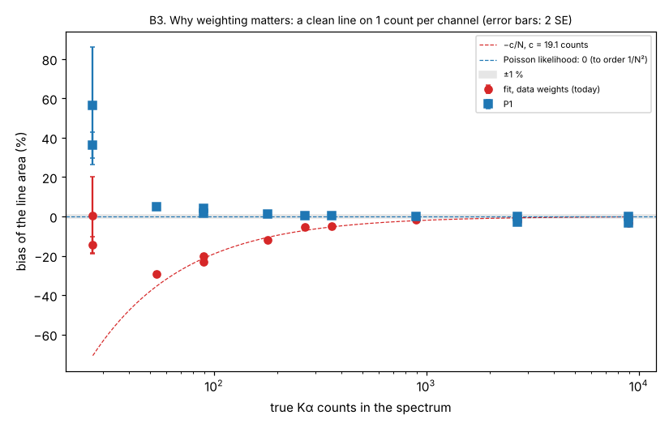

2026-11-24. The figures and numbers come from the two studies,
docs/studies/reflectivity_guard/summary.md (A, C48) and
docs/studies/mca_fit/summary.md (B, C47). Everything
measured is synthetic data with the truth known, except where NX school
data are named. The citations were checked as far as this environment
allows; see References.
This page explains two choices the reader makes when it turns
detector counts into numbers:
A. How strictly the reflectivity patch checks the
curve it fits where two scans join (the “guard”).
B. How a fluorescence line’s intensity is measured
from an MCA spectrum (window sum or fit, and how the fit weighs the
channels).
Each part has five sections:
the question, with a picture;
the idea in everyday terms;
the maths;
what the study found;
what we recommend, what it costs if we are wrong, and what would
change it.
The detailed studies are
docs/studies/reflectivity_guard/summary.md (A) and
docs/studies/mca_fit/summary.md (B).
A. The guard on the
reflectivity join
The question
Two scans overlap in
.
They were measured with different absorbers, so one must be scaled by a
factor
to meet the other. The reader finds
by fitting one smooth curve through both scans near the overlap. The
question is how good that curve must look before the reader trusts
it.

What the fit sees
The idea
Picture joining two photographs of a winding road, taken with
different exposures. You find the exposure ratio by drawing one smooth
line along the road across both photos.
If the road bends where the photos overlap, a stiff ruler won’t
follow the bend, and your ratio comes out a little wrong. That is
model bias.
If you keep switching to bendier rulers until one fits, you have
chosen the ruler after looking at the photo. The answer then
looks more certain than it is. That is
post-selection.
A strict guard does the second more often; a lenient guard leaves
more of the first. The study measures both and shows the trade-off.
The maths
Near the join, with
and
:
The coefficients
and
are fitted together by maximum likelihood. The guard
tries rungs
:
polynomial order
,
and
points either side of the overlap. It accepts the first rung whose
goodness of fit passes
Why choosing after looking makes the error too
small. Let
be the chance that rung
is chosen,
the mean of
when it is, and
its spread. By the law of total variance, the spread of what we report
is
The reported error is the chosen rung’s
own
,
which leaves out the second term. So when the rungs disagree, the pulls
spread wider than 1. That is the measured widening of +0.08 at a smooth
join (it was first reported as 1.13; the study shows most of that was
sampling noise). Statisticians call this post-selection inference:
inference after a data-driven choice “enjoys none of the guarantees”
classical theory gives when the model is fixed in advance (Berk et
al. 2013).
Why a lenient guard leaves bias. If the true curve
is not a polynomial of order
over the window (a Kiessig fringe, say), the fit converges to the wrong
even with no noise:
Errors shrink as counts grow, but
does not, so the pull mean
grows.
A third way, averaging. Instead of choosing one
rung, weight them all by how well they fit, and keep the spread between
them in the error:
This is model averaging with weights
from an information criterion
.
The variance above is the revised form (Burnham & Anderson 2002, eq.
6.12). Buckland, Burnham & Augustin (1997) proposed the square-root
form,
.
It is a candidate only.
What the study found

The decision curve
There were 400–2000 synthetic replicates per join, with the truth
known. Each dot above is one setting of the guard:
left and right is how honest the error bar is at a smooth join,
where 1.00 is ideal;
up and down is how biased the factor is at the five joins where a
fringe or a short overlap fools the curve, where 0 is ideal.
Choice
Bias at the hard joins (mean |pull mean|)
Error-bar size at the hard joins (pull SD)
At a smooth join (pull SD)
today, p₀ 0.3
0.24
1.02
1.00
stricter, p₀ 0.7
0.12
0.98
1.04
p₀ 0.01
0.52
0.92
0.92
no guard
0.33
0.47 (bars 3× too big)
0.92
averaging
0.59
0.83
0.92
old spline ratio
0.29
14 (bars meaningless)
1.47
A stricter guard leaves less bias, up to about p₀
0.7. From 0.3 to 0.7 the bias at the hard joins halves. Beyond
0.7 almost nothing changes. No setting removes the bias at a fringe,
because no polynomial fits a fringe exactly.
The price is small. At a smooth join the error bars
become about 4 % too small (1.04 instead of 1.00).
Choosing after looking does widen the error a
little (+0.08 at p₀ 0.3). But without the guard the bars are
already slightly too large at a smooth join (0.92), because they are
only ever inflated, never shrunk. The two nearly cancel.
The robustness maps, on two kinds of grid (scans
sharing their Qz points or not): the strict settings, p₀ 0.5–0.9, are
best in 23 of 24 combinations of fringe sampling (3–10 points per
fringe) and count level (1× to 0.01×).
Real data: on the public NX school joins every
setting gives the same factor. The first join agrees with the calibrated
absorber ratio to within 0.34σ.
Recommendation,
cost of being wrong, what would change it
Raise p₀ from 0.3 to 0.7.Done 2026-11-24: it
is the default now. In the reader that was one constant, with its
records and re-pinned tests. On the NX school joins the factors are
unchanged, and on NX’s split test (real scans cut in two with a known
factor) the default’s RMS pull went from 1.13 to 1.00.
The cost of either choice is small where it counts.
A structural fit of the patched curve moves film thickness and roughness
by about 0.001 Å, because it uses every point and the full covariance.
The choice matters for how honest each join’s error bar looks: 0.7 is
more honest at fringed joins, 0.3 at smooth ones.
Real data are not needed to decide. The ranking
holds across everything the synthetic data could not know.
What would change it:
a design where the 4 % over-confidence grows;
the owner’s long real series, if it showed joins where the fit and
the absorber ratio disagree.
How this answer changed overnight. A first map that
stopped at p₀ 0.3 said “keep 0.3”. Testing stricter settings showed the
gain continues to about 0.7.
B. Measuring a fluorescence
line
The question
An MCA spectrum has a fluorescence line (Zn Kα, say) sitting on
scattered X-rays: the elastic peak, Compton scattering and its tails,
and the detector’s own artefacts. How do we get the line’s photon count
honestly?

Anatomy of a spectrum
The idea
The window sum is like counting all the rain in a
bucket placed under a leak, during a drizzle. You count the leak and the
drizzle together.
A fit models the drizzle, here the scatter under
the line, and counts only the leak.
How the fit weighs the channels also matters.
If you trust each channel by the count it happened to get, the
channels that came out low look more precise, because their error
is smaller. Trusting them more drags the answer down.
Trusting each channel by the count it should have got, the
model, removes that pull. That is the Poisson (“P1”) weighting.
The maths
Channel
records
.
A line of area
and shape
(with
)
sits on a background
:
.
Window sum. Over a box of channels:
where
is the share of the line inside the box and
the scatter under it. The bias is
,
whatever the counts.
Data-weighted fit (Neyman’s
,
today’s default). It minimises
For a line alone
(),
setting the derivative to zero gives
With
,
to first order in
,
.
Then
with
the line’s total counts and
the number of channels that carry it: about one count per channel,
downward, as Baker & Cousins (1984) state for Neyman’s
.
With Pearson’s
(weights from the model, but not iterated to the likelihood) the bias
goes the other way, about half a count per channel. Mighell (1999) shows
the same for astronomical counts.
Checked by simulation (20 000 spectra per row; a Gaussian
line on no background; channels with mean > 0.5; zero counts clipped
to 1; the code is in the appendix):
Line width σ (channels)
Counts
Data-weighted bias
Poisson (P1) bias
3
90
15
−12.6 %
−16.7 %
+0.00 %
3
270
17
−5.5 %
−6.3 %
+0.01 %
3
1000
21
−1.8 %
−2.1 %
−0.01 %
6
270
33
−9.8 %
−12.2 %
−0.04 %
6
1000
37
−3.4 %
−3.7 %
−0.00 %
The first-order rule is close from about 1000 counts. Below that it
overstates the bias, because the clipping of empty channels softens it.
The Poisson fit is unbiased throughout.
Poisson maximum likelihood (P1). It maximises
For a line alone this gives
,
which is unbiased. For a linear model, the condition is the weighted
least-squares equation with weights
from the model. Iterating the weighted fit with weights from the
previous model (IRLS) reaches the maximum-likelihood answer.
Minimising Cash’s statistic
is the same thing, and it is valid at any number of counts per channel
(Cash 1979).
With the normalisation free, it keeps the fitted total equal to the
counts observed (Baker & Cousins 1984). It is not free of bias in
every case at very low counts, which the study measures.
Width fixed from the detector (P2). For a silicon
detector, the line width follows from electronic noise and charge
statistics:
with Fano factor
and pair energy
(for silicon
and
eV; textbook values, not checked here). Fixing the width removes a free
parameter that otherwise trades off against a curved background.
Escape stripping (P3). A photon of energy
that loses a Si Kα photon (1.74 keV) is recorded at
keV with probability
.
This happens only above the Si K edge at 1.839 keV. Stripping subtracts
that copy:
(The escape fraction against energy:
Reed & Ware 1972.)
What the study found

Why weighting matters
Tools man’s study (docs/studies/mca_fit/summary.md, C47)
used synthetic spectra with the truth known. Zn Kα (8.6 keV) under a 10
keV beam is the hard case: in the ±2 FWHM box the line has 887 counts,
against 5,681 from the oxygen 1s Compton wing, 570 from escape peaks and
471 from detector tails (B1).
The weighting (B3, above). Data weights read a weak
line low, by about
with
counts in that box: −23 % at 100 counts, −5 % at 400, −1.5 % at 1000.
That is the formula above, with the box’s background folded into
.
The Poisson fit (P1) is within its errors from about 60 counts up, and
matches data weights to 0.2 % at 10 000. Below about 50 counts every fit
becomes unstable.
The window sum is wrong wherever scatter sits under
the box. It failed in all 20 cells of the robustness map, and is off by
2.7 % even on smooth scatter.
The XFNTR curve’s shape (the worst point’s deviation
from the true curve):
Curve
window
data weights
P1
P1 + escape stripping
smooth, weak
24 %
13 %
1.2 %
1.2 %
hard (Zn under 10 keV)
68 %
4.7 %
4.7 %
1.4 %
The Zn-under-10 keV case is not solved by any fit.
The best, P1 with a fixed width and escape stripping, reads −7 % with 60
% of fits failing. What decides it is the oxygen 1s Compton wing under
the line (B7). The synthetic data cannot pin its real size: the
tabulated profiles could not be installed here, so the generator uses a
shell model with constants from memory.
A practical result: with a 12 keV beam the same case
passes with P1 alone, +0.5 % with no failures, because the scatter moves
away from the line. The line gets weaker: Zn K absorption falls about 40
% from 10 to 12 keV (from memory).
Recommendation,
cost of being wrong, what would change it
Make the Poisson fit (P1) the default for “Fit
lines”. It removes a bias of −19/N and costs nothing at high counts.
This needs no real data: it holds whatever the background.
Stop using the window sum where beam scatter sits
under the box. Keep it at most as a legacy option.
Keep fixed width (P2) and escape stripping (P3) as
options until a blank spectrum is in.
For Zn, consider the beam energy: 11–12 keV instead
of 10.
The cost of being wrong:
with the window sum, an XFNTR curve can be distorted by tens of
percent, misplacing surface against bulk;
with data weights, the weak high-Qz end reads low (13 % on the weak
curve).
What would change it: a blank spectrum (pure water
or the subphase, the same energy and geometry) measuring the oxygen 1s
wing and the escape fraction directly (DATA_NEEDS row 3). A wing well
below the model’s would make the full fit usable at 10 keV.
References
How far these were checked. The bibliographic
details were confirmed from publisher, ADS and index records. The claims
were checked against abstracts and against secondary sources that
restate the papers. The full texts were not read: this
environment’s network policy blocks the publishers and arXiv. Read every
claim here as checked at that level.
Baker, S. & Cousins, R. D. (1984). Clarification of the use of
chi-square and likelihood functions in fits to histograms. Nucl.
Instrum. Methods Phys. Res. 221(2), 437–442.
https://doi.org/10.1016/0167-5087(84)90016-4
Berk, R., Brown, L., Buja, A., Zhang, K. & Zhao, L. (2013).
Valid post-selection inference. Ann. Statist. 41(2), 802–837.
https://doi.org/10.1214/12-AOS1077 (open copy: arXiv:1306.1059)
Buckland, S. T., Burnham, K. P. & Augustin, N. H. (1997). Model
selection: an integral part of inference. Biometrics 53(2),
603–618. https://doi.org/10.2307/2533961
Burnham, K. P. & Anderson, D. R. (2002). Model Selection and
Multimodel Inference, 2nd ed. Springer, New York (eq. 6.12,
p. 345). https://doi.org/10.1007/b97636
Cash, W. (1979). Parameter estimation in astronomy through
application of the likelihood ratio. Astrophys. J. 228,
939–947. https://doi.org/10.1086/156922
Mighell, K. J. (1999). Parameter estimation in astronomy with
Poisson-distributed data. I. The χ²_γ statistic. Astrophys. J.
518, 380. https://doi.org/10.1086/307253
Névot, L. & Croce, P. (1980). Caractérisation des surfaces par
réflexion rasante de rayons X. Rev. Phys. Appl. 15(3), 761–779.
https://doi.org/10.1051/rphysap:01980001503076100. Derived for one rough
surface; applied interface by interface in the recursion, a later
generalisation.
Parratt, L. G. (1954). Surface studies of solids by total reflection
of X-rays. Phys. Rev. 95(2), 359–369.
https://doi.org/10.1103/PhysRev.95.359
Biggs, F., Mendelsohn, L. B. & Mann, J. B. (1975). Hartree-Fock
Compton profiles for the elements. At. Data Nucl. Data Tables
16(3), 201–309. https://doi.org/10.1016/0092-640X(75)90030-3. Free-atom,
per-shell profiles; using the O 1s profile for water is our inference.
The impulse approximation behind them is poor when the energy transfer
nears the 1s binding energy (about 0.54 keV).
Reed, S. J. B. & Ware, N. G. (1972). Escape peaks and internal
fluorescence in X-ray spectra recorded with lithium drifted silicon
detectors. J. Phys. E: Sci. Instrum. 5(6), 582–583.
https://doi.org/10.1088/0022-3735/5/6/029
Appendix: the
simulation of the weighting bias
import numpy as nprng = np.random.default_rng(1)x = np.arange(-40, 41)for sig in (3.0, 6.0): s = np.exp(-x**2/2/ sig**2); s /= s.sum()for N in (90, 270, 1000): mu = N * s n = rng.poisson(mu, size=(20000, len(x))).astype(float) keep = mu >0.5 A_N = s[keep].sum() / np.sum(s[keep]**2/ np.maximum(n[:, keep], 1.0), axis=1) # data-weighted A_P = n[:, keep].sum(axis=1) / s[keep].sum() # Poisson MLprint(sig, N, keep.sum(), A_N.mean() / N -1, -keep.sum() / N, A_P.mean() / N -1)